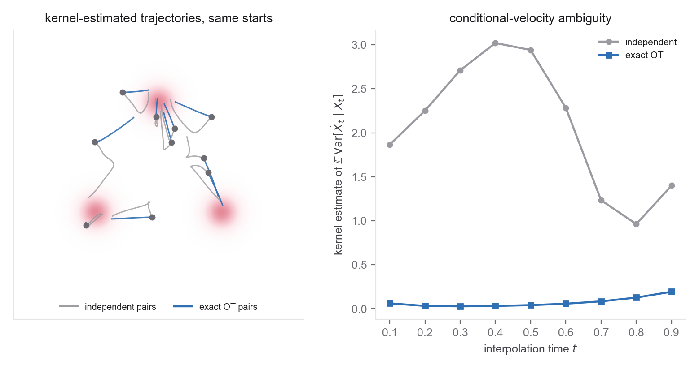

- The CFM training loop and sampler (Week 3 Problem 3)
- The Sinkhorn iteration and minibatch OT (Problem 2)
- Marginal preservation of the minibatch coupling (Problem 2 part 5)
- Conditional energy, velocity ambiguity, and trajectory straightness (Problem 1)
- Energy distance and basin populations as distribution metrics (Weeks 2-4)
- Tong et al. (OT-CFM), §3.2 and the released TorchCFM code
- Pooladian et al. for the straightness and variance results you reproduce
- Week 3 Problem 3 for the training loop you extend
- Klein, Krämer & Noé for the symmetry-reduced coupling of part 6
Scope. One 2D target, two couplings, one architecture. The whole point is to change only the pairing of \((x_0,x_1)\) inside the batch and measure how the learned field and generated distribution respond. Everything else (network, path, loss, and sampler) is held fixed from Week 3 Problem 3, so the coupling is the controlled intervention. Multiple seeds are still required to separate that effect from training noise.
Target. The required experiment uses one fixed target, so that results are comparable across submissions. Take the Gaussian base \(\rho_0=\mathcal N(0,I)\) and the three-mode toy target of Week 3 Problem 3, a mixture whose modes are well separated, so mode coverage is a real test. Fix and report the mixture means, covariances, and weights; the training, validation, and reference sample counts; one coordinate-wise affine standardization estimated on the training split and then held fixed for both models; and the basin definitions, for which nearest-component-mean Voronoi cells are a fine default. The straight interpolant \(x_t=(1-t)x_0+t x_1\) and a small MLP velocity are unchanged from Week 3; the only new code is the batch pairing. The Müller-Brown surface is an optional extension rather than a substitute, since using it requires you to also fix an inverse temperature, a truncation domain, a reference sampler, and basin boundaries, none of which are specified here.
Problem 1 separated endpoint cost from marginal-field geometry, and Problem 2 made minibatch OT computable while preserving population endpoint marginals. This lab tests the finite-model consequences. Train two models that differ only in how each batch pairs base and data, either independently (I-CFM) or with a per-batch OT plan (OT-CFM), and test rather than assume whether OT lowers velocity ambiguity, trajectory deviation, or few-step error on this target.

Implement a small set of functions with clean interfaces. Note that optimizer_batch and
pairing_block are deliberately separate arguments; part 5 explains why collapsing them into one
"batch size" would confound the experiment.
sinkhorn(x0, x1, reg, iters, tol) # k x k entropic OT plan, log-domain; from Problem 2
exact_ot_pair(x0, x1) # Hungarian assignment on C; unregularized exact OT (the eps=0 baseline)
entropic_ot_pair(x0, x1, reg) # Sinkhorn plan -> permutation by Birkhoff/dependent rounding, E[Pi|P] = P
cfm_batch(x0, x1) # x_t = (1-t) x0 + t x1 ; target velocity x1 - x0
train(coupling, steps, optimizer_batch, pairing_block, seed)
# coupling in {"independent", "exact_ot", "entropic_ot"}
sample_ode(v, x0, n_steps) # Euler integration of the learned velocity
sample_ode_ref(v, x0, tol) # high-accuracy reference solution (adaptive RK45 or verified fine RK4)
straightness(v, x0, t_grid) # mean over paths of |v(x_t,t) - time_average(v)|^2
transport_cost(x0, x1_paired) # mean || x1 - x0 ||^2 of the realized pairing
energy_distance(samples, ref) # distribution distance to a held-out reference set
resolution_floor(ref_a, ref_b, reps) # reference-vs-reference energy distance; returns median and band
sweep_steps(v, n_grid) # energy distance vs number of Euler steps
sweep_pairing_block(reg, k_grid) # transport cost and few-step quality vs pairing-block size
- Two couplings, one loop. Keep two pairing routes distinct, because they are different
objects and conflating them makes the \(\varepsilon\) sweep of part 5 meaningless.
exact_ot_pairruns Hungarian assignment on the cost matrix \(C\) itself. It is unregularized exact OT, its output does not depend on \(\varepsilon\) at all, and it is the \(\varepsilon=0\) baseline.entropic_ot_pairinstead takes the Sinkhorn plan \(\pi_\varepsilon\) with row and column sums \(1/k\), forms the doubly stochastic \(P=k\pi_\varepsilon\), and draws a permutation matrix \(\Pi\) by Birkhoff-von Neumann or another dependent rounding satisfying \(\mathbb E[\Pi\mid P]=P\). Pair \(x_{0,i}\) with \(x_{1,j}\) wherever \(\Pi_{ij}=1\). Do not take a Hungarian assignment of the Sinkhorn plan's entries and call it a sample from that plan, since that is a deterministic projection and loses the expectation property. Independent rowwise argmax is forbidden outright because it can reuse targets and destroy the target marginal. State the Sinkhorn objective you regularize, \[ \min_{\pi\in\Pi(a,b)}\ \langle\pi,C\rangle+\varepsilon\sum_{ij}\pi_{ij}(\log\pi_{ij}-1), \] and report \(\varepsilon\) relative to the cost scale, for instance \(\varepsilon/\operatorname{median}(C)\), together with a convergence tolerance and not only an iteration cap.
Then train velocity networks that are identical except for the pairing, one using the batch as drawn (independent), one re-pairing it before forming \(x_t\). Report training and held-out CFM losses and describe what they do. Do not assume they reach zero, and do not assume any particular ordering between the two couplings. Note carefully what the held-out loss is not: it is not the conditional-velocity-variance floor, because it also contains approximation, optimization, and finite-sample error. Call it the held-out CFM loss and keep the variance estimate of part 3 separate from it. - Endpoint check first. Before measuring any advantage, test whether the two finite models
approximate the target comparably at high step count: overlay samples on the target, compare the
three basin populations, and report the energy distance to a held-out reference for both, using
sample_ode_refrather than a step count you have not checked. Build the resolution floor as a distribution, not a single line. Fix the generated and reference sample counts at the same \(m\), state the empirical energy-distance estimator you use, repeat the reference-versus-reference comparison \(R\) times on independent reference sets, and report a median with an uncertainty band. One comparison between two reference sets is noisy and will mislead you. If either model fails, report finite model, optimization, and integration error rather than calling it a contradiction of population marginal preservation. - Conditional energy and trajectory straightness. Measure two distinct quantities. (a) The
realized conditional-path energy \(\tfrac1k\sum\|x_1-x_0\|^2\), which the exact assignment
minimizes within each batch. An entropically rounded permutation carries no such guarantee, so report the
plan cost \(\langle\pi_\varepsilon,C\rangle\), the realized cost \(\tfrac1k\langle\Pi,C\rangle\), and the
exact lower bound \(\min_\sigma\tfrac1k\sum_i C_{i,\sigma(i)}\) as three separate numbers. Do not call any
of them curvature. (b) A trajectory-straightness
functional. Integrate the learned ODE from a set of shared base points and measure the deviation of the
velocity along each path from its time-average,
\[ S=\frac{1}{n_{\rm eval}M}\sum_{i,m}\big\|v_\theta(x_i(t_m),t_m)-\bar v_i\big\|^2,\qquad
\bar v_i=\frac1M\sum_m v_\theta(x_i(t_m),t_m), \]
which is zero for a perfectly straight path. Integrate with
sample_ode_refhere, not with coarse Euler, or \(S\) will partly measure your integration error rather than the geometry of the field. Report raw \(S\) and, optionally, a version normalized by total path kinetic energy, which separates genuine directional variation from a mere reduction in transport scale. Plot the trajectories from a shared set of base points for both models and report the straightness numbers.
(c) Estimate conditional velocity variance properly, since it is not the held-out loss. On a fixed grid of \(t\), generate held-out endpoint pairs through the complete coupling procedure, which for OT means generating and pairing whole held-out batches rather than sampling isolated endpoints. Set \(z=x_t\) and \(u=x_1-x_0\), fit a cross-validated kernel or \(k\)-nearest-neighbour regression \(\hat m_t(z)\approx\mathbb E[u\mid x_t=z,t]\) on one fold, and evaluate \(\widehat V(t)=\tfrac1M\sum_i\|u_i-\hat m_t(z_i)\|^2\) on another. Report the bandwidth or neighbour count, and call \(\widehat V(t)\) a nonparametric proxy, since smoothing error survives. Then determine empirically whether lower endpoint cost coincides with a simpler learned field on this problem. - Few-step sampling. This is the empirical test. For both models, run
sweep_stepsover \(N\in\{1,2,4,8,16,32,64\}\) Euler steps and plot energy distance versus \(N\) on log-log axes, with the resolution-floor band drawn on it. Fix the protocol first. Euler uses \(t_n=n/N\) and evaluates \(v(x_n,t_n)\); both models start from the same base samples at every \(N\); and the model's reference solution issample_ode_ref, not 200 Euler steps, which you should not assume are converged. If you do use a fine Euler grid, verify that 200 and 400 steps agree to a stated tolerance. Alongside energy distance, report the paired endpoint error \(\tfrac1n\sum_i\|x_i^{(N)}(1)-x_i^{\rm ref}(1)\|^2\), which isolates the solver contribution, whereas energy distance mixes integration error with model error.
Predeclare the fixed quality threshold before you look at either curve. A defensible choice is a fixed multiple of the resolution-floor distribution, such as twice its 95th percentile; the multiple matters less than fixing it in advance. Test whether OT-CFM sits below I-CFM and report the smallest tested \(N\) at which each model reaches that threshold, which is the honest summary statistic rather than a single ratio. If a model does not reach it by \(N=64\), report "\(>64\)" instead of extrapolating. Do not assume both curves flatten at the floor. If a curve enters the floor band, no finer metric-level distinction is supported and the metric rather than the sampler is the bottleneck. If it plateaus above the band, report the remaining high-accuracy model error (the same discipline as Week 4 Problem 3 part 5). - The minibatch knobs. Now expose the approximation of Problem 2, and control it properly.
Do not vary the optimizer batch size to vary \(k\). Doing so would change the coupling accuracy, the
gradient noise, the examples processed per update, and possibly the learning-rate regime all at once, so no
observed effect could be attributed to the coupling. Instead fix the optimizer batch \(B=256\), fix the
number of updates, and treat \(k\) as a pairing-block size. Partition each optimizer batch into
\(B/k\) blocks, solve OT independently inside each block, concatenate the paired examples, and take one
optimizer step. Run
sweep_pairing_blockover \(k\in\{2,4,8,16,64,256\}\), each of which divides \(256\), and plot realized transport cost, the conditional-variance proxy, and few-step quality. Report wall-clock separately, since the OT solve genuinely does cost more as \(k\) grows. Do not impose monotonicity; describe the measured trend and uncertainty across seeds. Separately sweep the entropic regularization \(\varepsilon\) and connect each regime to Problem 2 part 3. Large \(\varepsilon\) drives the pairwise assignment probabilities toward the uniform coupling, which is the random-permutation analogue of independent pairing rather than full rowwise independence, since rounding still matches without replacement. Tiny \(\varepsilon\) needs the log-domain Sinkhorn and can be numerically fragile. Test whether an intermediate value captures most of any benefit rather than assuming it does. Then stress-test \(k=2\). Verify the endpoint marginals of the pairing construction directly over many random batches, separately from the generated samples. For the unequal-mode test, change only the mixture weights, to \((0.80,0.15,0.05)\), holding the means, covariances, and the affine standardization fixed, so the experiment does not move the geometry and the mode probabilities together. Then determine whether small blocks degrade the learned field or few-step basin populations. - Optional extension. A symmetry-reduced coupling. Add a symmetry to the toy and test
whether the coupling exploits it. Give the target a discrete symmetry so that a base point and a data point
differing only by that symmetry are physically identical. Fix a finite orthogonal group \(G\) containing
the identity, for example \(G=\{I,R\}\) for a single reflection, and define
\[ c_G(x,y)=\min_{g\in G}\|x-gy\|^2. \]
Then \(c_G\le\|x-y\|^2\) is immediate, so the optimal assignment cost under \(c_G\) cannot exceed the
raw-coordinate optimum. Verify that. The rest of the specification is where this experiment is usually
botched, so state each choice: how ties in the minimizing \(g\) are broken; whether you align the source or
the target representative; which aligned representative enters \(x_t\) and \(x_1-x_0\); why that operation
preserves the intended endpoint marginal; and whether you evaluate sample quality in raw coordinates or on
the quotient.
Be careful what you claim to have reproduced. Klein, Krämer and Noé build an equivariant continuous normalizing flow, not merely a symmetry-aware cost, so a symmetry-aware pairing on an ordinary MLP is not their construction. For a controlled comparison, use the same equivariant field for both the raw-cost and quotient-cost models. For a finite reflection group you can symmetrize an ordinary MLP \(f_\theta\) as \(v_\theta^G(x,t)=\tfrac1{|G|}\sum_{g\in G}g^{-1}f_\theta(gx,t)\). Absent that, describe the result as symmetry-aware OT pairing. Write a short paragraph connecting this to a real molecular target, where the symmetry group is rotations and atom permutations and the naive OT plan wastes capacity on rigid motions and relabelings; explain why the reduced coupling helps even though both leave the marginals unchanged.